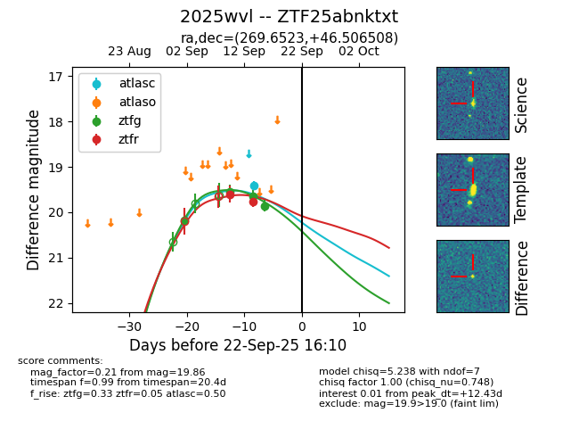
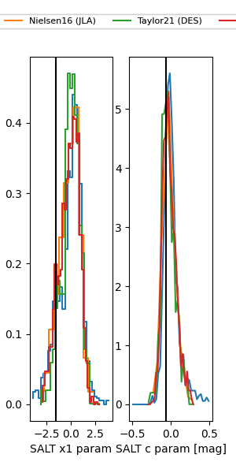

FINK: ZTF25abnktxt
Lasair: ZTF25abnktxt
ALeRCE: ZTF25abnktxt
TNS: 2025wvl
YSE: 2025wvl
ZTF25abnktxt (ztf,fink)
2025wvl (tns,yse)
equatorial (ra, dec) = (269.6523,+46.50651)
galactic (l, b) = (73.5133,+28.08278)


last atlasc=19.40, ztfg=19.86, ztfr=19.76
1 atlasc, 4 ztfg, 2 ztfr detections